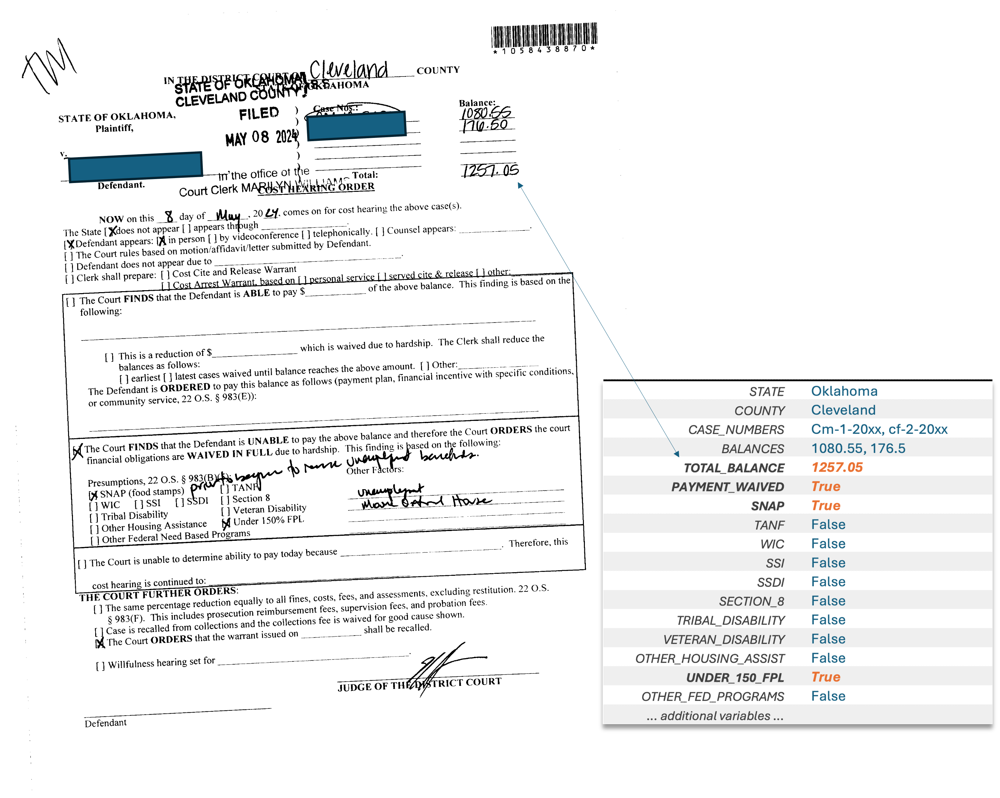

Whether you're a non-profit organization, a for-profit company, or a research team, trying to use public data at scale means lost time, inconsistent results, and missed opportunities.
DataWorks turns fragmented public data into usable infrastructure.
We handle the heavy lifting—extracting, cleaning, structuring, and validating messy datasets from courts, health agencies, schools, social services, and more—so what you get is clean, current, reliable, and ready to use.
Every dataset we deliver comes with clear, rigorous documentation—so you know exactly what it contains, where it came from, and how it was processed.
Our platform, DataWorks Commons, offers validated, cross-agency datasets ready for use. And our custom solutions solve harder problems: like pulling structured information from PDFs, tracking outcomes across counties, or building real-time alerts from state data feeds.
We partner with public institutions, mission-driven orgs, and private companies.
Explore a handful of our current solutions.
We’ve built The DataWorks Commons, a unified, intelligent platform that aggregates and standardizes fragmented state and local datasets across key areas like education, courts, social services, health, economy, and community safety. This dramatically reduces the time and cost of data acquisition for businesses, nonprofits, and researchers, allowing them to focus on their mission and drive impact.
Oklahoma once had the highest rate of female incarceration in the United States.
Today, its two largest counties tell a story of change. Oklahoma County has seen a 76% drop in female prison sentences since the mid-2010s, reaching record lows in 2024. Tulsa County has cut sentences nearly 50% since 2010, but recent trends suggest progress has slowed.
As Oklahoma County continues to decline and Tulsa’s numbers level off, these trends reflect the shifting landscape of justice reform and its role in breaking cycles of incarceration.
Oklahoma has long struggled with high student poverty rates, but the divide across the state is striking.
In southeastern and rural counties, over 79% of students are economically disadvantaged, with Choctaw, Hughes, and Seminole counties among the highest. Meanwhile, northwestern counties, like McClain and Woods, report far lower rates, some below 42%.
These gaps reflect broader economic disparities, shaping access to resources and opportunities for students across the state.
Crime in Oklahoma follows a clear pattern: counties with high violent crime rates also experience high property crime rates, though the extent varies widely.
Urban centers like Tulsa and Oklahoma counties consistently report some of the highest crime levels. Meanwhile, rural counties like Osage and Okfuskee have crime rates that rival the state’s largest cities, with property crime exceeding 5,000 per 100K and violent crime above 2,500 per 100K. In contrast, counties like McClain and Washington have some of the lowest rates in both categories.
These disparities highlight the need for region-specific public safety strategies, as both urban and rural areas face unique crime challenges.
AI Powered Document Extraction
What if the information you need most is buried in handwritten notes, scanned PDFs, or outdated systems—but you still need it structured, accurate, and scalable across tens of thousands of records?
Whether you're analyzing court waivers, social services forms, licensing records, or housing applications, the raw materials are often the same: fragmented documents in inconsistent formats. Solving that bottleneck doesn’t just speed up workflow—it unlocks entirely new ways of understanding the data you already have.
Example Problem
Oklahoma’s HB 2259 was created to reduce court costs for indigent Oklahomans by assessing their ability to pay. But key questions remain:
Do these waivers result in meaningful financial relief?
What is the total amount of court debt avoided?
Does reduced debt lead to fewer failure-to-pay warrants or future charges?
Answering these questions requires structured, case-level data—yet the relevant details are buried in fragmented, scanned court documents with a mix of typed and handwritten text.
Our Solution
We’ve built a tightly controlled, AI-powered system that extracts and structures complex court data at scale.
We retrieve relevant records directly from Oklahoma’s public court system using automated search tools.
We use structured AI tools—guided by Pydantic schemas—to extract key information (balances, eligibility, court findings) from mixed-format documents.
We store data in a graph database, making it easy to query like a spreadsheet while also mapping deeper relationships across cases, individuals, and outcomes.

Example of a scanned court document with both typed and handwritten sections.
Why This Matters
Beyond court records, this system offers a blueprint for structuring document-based data in any domain:
Health: Extract data from handwritten intake assessments or care plans
Education: Structure student-level records from scanned IEPs or counselor notes
Workforce: Parse job training documents, evaluations, or subsidy applications
If your data lives in messy PDFs, DataWorks can turn it into something you can search, analyze, and use—at scale, across systems, and with validation built in.
Structured Event Tracking
What if you could automatically track key dates—hearings, renewals, deadlines—across dozens of systems and locations, without waiting for someone to manually check a website or pick up the phone?
In every sector, missed dates create consequences: court warrants, lapsed benefits, missed interviews, expired licenses. The information is often public—but fragmented, inconsistently formatted, and hard to access at scale.
We built a system that solves this for courts, but the same approach can power automated monitoring across public records—keeping individuals, teams, and systems on track.
Example Problem
Thousands of people miss court dates every year—not because they’re evading justice, but because they never receive clear or timely reminders. These missed appearances (failure to appear, FTA) often lead to bench warrants, arrests, and jail stays that could have been avoided.
The information needed to prevent this—next court dates, times, locations—is public, but spread across dozens of counties in inconsistent formats. For many individuals, family members, and case managers, keeping up with court dates is nearly impossible.
Our Solution
We’ve developed an automated system to extract, structure, and monitor upcoming court events across Oklahoma’s 77 counties.
We pull next court events daily from public systems using custom-built tools that adapt to the format of each county’s data.
Our AI structuring layer transforms raw, unstandardized listings into clean, queryable data—including defendant name, case number, hearing type, time, and location.
All data is stored in a structured database, ready for integration into downstream tools such as text and email reminder systems.
Our system takes unstructured court listings across counties and clerks like this…
Monday, April 21, 2025 at 9:00 AM DISTRICT COURT ARRAIGNMENT DOE, JOHN CF Docket C
04-21-2025 CTPASS JUDGE Jerry Moses: Defendant present, not in custody and represented by Julie Johnson. State represented by John Johnson. District Court Arraignment passed to 4/21/25 at 9:00 AM in Room 406. Bond to remain; defendant recognized back.
…and transforms them into a structured record that can be passed to any downstream CRM or court reminder system.
Health & Benefits: Monitor Medicaid recertifications, WIC appointments, or eligibility hearings.
Housing & Services: Keep clients and caseworkers informed about subsidy renewals, landlord hearings, or application windows.
Any organization that serves people navigating time-sensitive public systems can benefit from structured, real-time date tracking.
Comprehensive Case Modeling
Criminal court records hold the essential details that shape both individual outcomes and system-level insights—charges, sentencing, bond types, warrants, diversion participation, and more. But those elements live in many formats, scattered across scanned documents, docket minutes, and outdated court systems. There is no shared structure, no consistent language, and no reliable way to move this data across platforms or track it at scale—until now.
Support programs, researchers, and organizations investing in change can now access a stable foundation for service coordination, research evaluation, and insight analysis.
Our Solution
We’ve designed a legal data model that captures the full architecture of a criminal case—and built an AI-powered system to populate it automatically.
We extract and structure dozens of case elements: disposition, sentencing type, custody, bond type, fines & fees, issued warrants, diversion participation, and court events.
Every output is validated against a strict schema to ensure consistency and integrity—enabling integration with dashboards, case management systems, and research pipelines.
Stored in a graph database, this model supports both individual case tracking and cross-cutting queries about sentencing patterns, bond trends, or program outcomes.
Structured Criminal Case Index
Example
Why This Matters
This isn’t just about structuring data—it’s about building a durable layer of infrastructure for the justice system.
Programs can automate client case details, updates, and monitor legal events without manual follow-up.
Funders and system leaders gain a unified view of how policies and interventions play out across populations and case types.
Researchers get access to complete, clean data that enables evaluation far beyond what's possible with traditional court records.
Civil Case Intelligence
In civil litigation, the advantage often lies in what you can find—quickly. But the data needed to build timelines, spot expert witness patterns, or anticipate judicial rulings is scattered across filings, motions, scanned documents, and fragmented court systems.
Legal teams spend hours reviewing records just to answer basic strategic questions—and often outsource the work at high cost.
Our Solution
We’ve developed a system that extracts, structures, and organizes civil case data at scale—providing legal teams with the tools they need to work smarter, faster, and more strategically.
Our AI models parse filings, dockets, motions, orders, and trial verdicts into structured case records — capturing outcomes, rulings, expert witnesses, timelines, and more.
Using structured prompts and schema validation, we generate reliable case summaries and event timelines directly from raw documents.
All data is queryable by judge, outcome, jurisdiction, and issue—revealing patterns in rulings, motions, and judicial tendencies over time.
Example Case Summary
On March 14, 2018, the plaintiff took their vehicle to the defendant for scheduled maintenance. The services performed included an oil and filter change, fluid level check, tire pressure adjustments, and a multi-point inspection. The defendant’s technician found that the tread on the plaintiff’s right rear tire was low. However, the defendant did not inform the plaintiff that the tire was unsafe. The plaintiff's car was returned to them on March 15, 2018. On March 25, 2018, the plaintiff was involved in a single-vehicle accident when the car hydroplaned during a heavy rainstorm.
The plaintiff contended that the accident occurred because the defendant failed to properly service the vehicle ten days earlier. Specifically, the plaintiff claimed the defendant was negligent in failing to inspect the tires and warn about the low tread. The plaintiff further alleged negligence in assigning the inspection to an employee who failed to properly notify them of the condition, and in not providing a written copy of the multi-point inspection results. The plaintiff also claimed breach of contract and breach of express and implied warranties, arguing that the maintenance and inspection services were not performed professionally. The plaintiff requested damages in excess of $75,000 for injuries, medical expenses, lost wages, and pain and suffering.
The defendant argued that the multi-point inspection was a courtesy and not a required service. They also claimed the plaintiff was distracted and speeding at the time of the accident. The defendant asserted there was no contractual obligation to provide inspection documentation and denied that the low tire tread caused the accident. They maintained they were not negligent and not responsible for the plaintiff’s injuries or damages.
Timeline of Events
March 15, 2018: Plaintiff's vehicle undergoes maintenance at ABC Auto Services. Technician notes low tire tread.
March 25, 2018: Plaintiff crashes due to hydroplaning. Plaintiff’s child was a passenger.
2018–2022: Legal preparation and evidence gathering.
Feb 25, 2020: Plaintiff files lawsuit against ABC Auto Services and XYZ Auto Management Group.
May 20, 2020: Defendants file responses, denying most allegations.
Feb 22, 2021: Subpoenas issued for plaintiff’s employment and business records.
Apr 28, 2021 – Aug 2022: Discovery requests, including attempts to schedule tire inspections.
Aug 30, 2022: Plaintiff’s attorney requests VIN-based vehicle records.
Dec 6, 2022: Motion to compel full discovery responses.
May 8, 2023: Court orders defendant to comply with discovery.
May–Sep 2023: Depositions of multiple service employees and experts.
Oct 2023–Feb 2024: Ongoing discovery and correspondence.
Dec 2023 – Feb 2024: Motions filed for summary judgment and discovery enforcement.
May–Sep 2024: Trial preparation and objections exchanged.
Oct 2024: Motions in Limine filed by both parties.
Nov 4–7, 2024: Jury trial held.
Nov 26, 2024: Jury finds ABC Auto Services 80% negligent; plaintiff 20% negligent.
Dec 2024: Designation for appeal filed; defendants file for attorney fees.
Cast of Characters
Alex Reynolds: Plaintiff, vehicle owner and driver at time of crash.
Jamie Reynolds: Minor passenger in vehicle, child of plaintiff.
ABC Auto Services: Main defendant, performed vehicle maintenance.
XYZ Auto Management Group: Related business entity, co-defendant.
Erin Matthews: Plaintiff’s lead attorney.
Jordan Ellis: Co-counsel for plaintiff.
Kai Walker: Defense attorney for ABC Auto Services.
Taylor Brooks: Additional defense counsel.
Casey Duran: Plaintiff’s engineering and tire expert.
Robin Chen: Vehicle damage appraiser for plaintiff.
Morgan Price: Technician who performed tire inspection.
Drew Parker: Service department employee, trial witness.
Jesse Lane: Auto technician, witness under subpoena.
Sam Carter: Manager, witness under subpoena.
Alexis Ford: Expert for plaintiff.
Riley Kim: Additional service department employee and witness.
Dana White: Former service advisor (no role in disputed appointment).
Judge Morgan Bennett: Presiding judge over the case.
Sydney Cross: Insurance adjuster for ABC Auto Services.
RapidTech Solutions, Inc.: Third-party software vendor for repair tracking.
Why This Matters
For Law Firms: Reduce time spent on manual case review, improve strategy, and gain a competitive edge with deeper visibility into courts, experts, and patterns.
For Attorneys: Speed up research, improve accuracy, and make case information easier to access—freeing up more time for high-value, billable work.
For Firm Leadership: Bring key research functions in-house, lower reliance on outsourced services, and invest in tools that compound in value over time.
Oklahoma DMHSAS Dataset
1. Source Overview
Title:
Mental Health and/or Substance Abuse Clients Served – County-Level Counts and Rates
Publisher:
Oklahoma Department of Mental Health and Substance Abuse Services (ODMHSAS)
Original Format:
Online dashboard (web-based query system)
Time Period Covered:
FY2015 (July 1, 2014 – June 30, 2015) through FY2024 (July 1, 2023 – June 30, 2024)
Quoted Methodology from Source:
ODMHSAS Online Query System (OOnQueS)
Mental Health and/or Substance Abuse Client Served
Client Served by ODMHSAS/Medicaid Behavioral Health Providers (Most Recent 10 Years)
Client Counts by County of Residence (Most Recent 10 Years)
Who is counted in the system?
The system includes individuals who have received a PAID behavioral health service for programs which ODMHSAS contracts with or operates. This includes behavioral health services paid for with Medicaid funding or behavioral health services paid for with state-appropriated, grant-supported, or federally-funded ODMHSAS monies. Includes substance residential, detox, and halfway house services contracted directly with ODMHSAS.
Who is not included?
Non-outpatient Medicaid-funded behavioral health services, such as most inpatient. The only inpatient counts included are ODMHSAS state-operated inpatient facilities. Data from privately-funded, non-contracted American Indian programs or private insurance is NOT included.
What does ‘Not Reported’ mean?
Some services (e.g., crisis or initial assessment) do not require providers to report detailed demographics.
Why can I only see county of residence in some queries?
To protect confidentiality. For example, if a county has only two female Asians aged 0–6, and one received services, the identity may be inferred.
What is the difference between ‘Any Drug of Choice’ and ‘Primary Drug of Choice’?
Clients may report up to three drugs of choice: primary, secondary, tertiary. 'Primary' only includes the first. 'Any' includes all three.
What is a Fiscal Year?
Oklahoma’s fiscal year runs July 1 to June 30. E.g., FY22 = July 1, 2021 – June 30, 2022.
If you need more detail, contact: David.Wright@odmhsas.org
Source Documentation:
No standalone downloadable documentation provided. All methodology is embedded within the FAQ and About sections of the dashboard.
2. Data Use in DataWorks Commons
Was the data transformed, estimated, or used raw?
Raw data was used. No values were estimated or altered during ingestion.
How was the data used in DataWorks Commons?
The dataset powers the mental health and substance use metrics within the DataWorks Commons platform. It provides:
Gender-specific and overall client rates per 100,000 by county
Aggregated comparisons across metro, metro-adjacent, and non-metro county types
Comparisons of 781 funded vs non-funded counties (as of February 2025).
Trend analysis across FY2015–FY2024
This enables researchers, local government, and community organizations to evaluate service reach, demographic disparities, and regional gaps in care.
3. Transformations & Processing
Transformations applied:
Standardized county names to align with geographic identifiers
Mapped fiscal years to calendar years (e.g., FY15 → 2015)
Grouped client counts by County, Gender, Fiscal Year, and MHSA category
Merged with county-level population data (male/female) from DataWorks Commons for denominator calculations
Computed rates per 100,000 population using the formula: Rate = (Unique Clients / Population) × 100,000
Aggregated values by:
County Type (Metro, Metro-Adjacent, Non-Metro)
Funding Status (Funding vs Non-Funding counties)
Gender × County Type (e.g., Female in Non-Metro counties)
Processing Tools:
Python + Pandas; population data pulled dynamically via the DataWorks Commons Python API
4. Estimates, Interpolation, Labeling
Were estimates or imputations made?
No
Were any fields reclassified or grouped?
No — client-level attributes (gender, MHSA type) were used as-is from the source.
Assumptions or estimation formulas used?
None — no assumptions were required.
5. Data Quality & Limitations
Coverage:
Full – 100% of paid behavioral health client services reported to ODMHSAS for contracted and state-operated providers.
Limitations / Caveats:
Reflects only individuals who received paid services through ODMHSAS programs (Medicaid, state, or grant funded).
Does not include individuals who may have needed services but did not receive them.
Excludes services paid through private insurance, non-contracted providers, or tribal health programs.
Suppressed or imputed values:
None — the dataset does not contain redacted or statistically masked entries.
6. Version History
Publication Date:
Currently published
Update Frequency:
Annually
Version Notes:
None
Oklahoma DOC Dataset
1. Source Overview
Title:
Prison and Probation Sentences – County-Level Counts and Rates
Publisher:
Oklahoma Department of Corrections (ODOC)
Time Period Covered:
2000 to present (outputs filtered to 2010–2024)
Quoted Methodology from Source:
ODOC Data Extract Layout and Crosswalk Notes
The data files are fixed width text files. The sample files contain a subset of the data in the extract files and are useful for testing your import.
Special values for sentence types:
9999 = death sentence
8888 = life without parole
7777 = life sentence
Source Documentation:
No standalone documentation provided. All methodology is embedded in the data layout tables and descriptions available at the access URL.
2. Data Use in DataWorks Commons
Was the data transformed, estimated, or used raw?
Raw data was used. Records were aggregated using straightforward counts; no values were estimated or imputed.
How was the data used in DataWorks Commons?
The dataset powers incarceration metrics within the DataWorks Commons platform. It provides:
- Counts and per capita rates of prison sentences and offense records by county
- Demographic breakdowns (race and gender) for both sentence and offense measures
- Offense-type categorization using UCCS coding
- Comparative trends by county type (Metro, Metro-Adjacent, Non-Metro)
- Aggregated trends from 2010 through 2024
This supports community organizations, researchers, and public officials in monitoring sentencing patterns and disparities across Oklahoma.
3. Transformations & Processing
Transformations applied:
- Parsed fixed-width text into structured CSV format
- Cleaned and standardized column names
- Converted JS_DATE to datetime and extracted year
- Recoded “American Indian” and “Alaskan Native” into a unified race category
- Mapped each county to a Metro, Metro-Adjacent, or Non-Metro type
- Applied UCCS coding system to group offenses by type (e.g., Violent, Property, Drug)
- Merged with population data by county, race, and gender using DataWorks Commons API
- Computed metrics: Sentence Count = Unique DOC_NUM per county per year Offense Count = All offense rows (multiple per person possible) Rate = (Count / Population) × 100,000
(Population year chosen as closest available prior to or equal to the event year)
- Aggregated values by:
County × Year
Race × County × Year
Gender × County × Year
Offense Type × County × Year
County Type (Metro, Metro-Adjacent, Non-Metro)
Processing Tools:
Python + Pandas; population data retrieved via DataWorks Commons Python API
4. Estimates, Interpolation, Labeling
Were estimates or imputations made?
No
Were any fields reclassified or grouped?
Yes
- Offense Type: Classified using UCCS schema developed by CJARS (e.g., 1 = Violent, 2 = Property, etc.)
- Race: “American Indian” and “Alaskan Native” grouped together
- County Type: Each county labeled as Metro, Metro-Adjacent, or Non-Metro
Assumptions or estimation formulas used?
None — counts are based on direct aggregations of raw records. Population rates are calculated using observed values only.
5. Data Quality & Limitations
Coverage:
Full – dataset includes all prison and probation sentence records reported by ODOC statewide
Limitations / Caveats:
- Data only includes individuals for whom sentence or offense-level records exist
- No information is included on unsentenced individuals, pretrial, or those released without a formal sentence
- Population denominators limited to years 2016–2023; nearest available year used for each event
Suppressed or imputed values:
None — no data masking, suppression, or imputation applied
6. Version History
Publication Date:
Quarterly, as data becomes available
Update Frequency:
Quarterly
Version Notes:
None
Oklahoma EQA Dataset
1. Source Overview
Title:
Oklahoma Educational Indicators Program - Profiles State Report
Publisher:
Oklahoma Office of Educational Quality and Accountability
The information presented in the “Profiles Report” is divided into three major reporting categories: (1) Community Characteristics, (2) Educational Process, and (3) Student Performance. This is meant to mirror the real-world educational process. Students have a given home and community life. They attend schools comprised of a diverse makeup of teachers who deliver education through different programs and a variety of teaching styles. And in the end, all of these factors come to bear on each student’s academic performance.
The “State Profiles” deals with state-level common education issues. It examines the “big picture” of Oklahoma education and it is meant to set the stage for examining education in your part of the state, or within your local community. It contains many tables, graphs, and maps, all with accompanying text. Wherever possible, tables and graphs cover multiple years so that trends may be observed. National comparisons are added where comparable data exists.
2. Data Use in DataWorks Commons
Was the data transformed, estimated, or used raw?
Data was extracted using AI-based visual document processing. Values were not estimated or transformed.
How was the data used in DataWorks Commons?
The dataset was used to populate the "Oklahoma Education" section in DataWorks Commons. Variables were grouped into categories including Test Scores, Post-Secondary Outcomes, Demographics, and District Revenue. All data is county-level and supports time series comparisons across 2017–2023.
3. Transformations & Processing
Transformations applied:
None applied. Data was extracted as-is from maps embedded in PDFs.
Processing Logic:
- PDF pages were converted into images.
- Each image was analyzed by an AI-powered tool using a structured prompt.
- Values for all 77 Oklahoma counties (plus State Average) were extracted.
- Missing or unreadable values were recorded as "N/A".
- Values were not modified after extraction.
- Output was saved in a structured CSV format with metadata (map title, county, page number).
4. Estimates, Interpolation, Labeling
Were estimates or imputations made?
No
Were any fields reclassified or grouped?
No
Assumptions or estimation formulas used?
None
5. Data Quality & Limitations
Coverage:
Mostly full. Some variables are partial due to not being published in all years.
Limitations / Caveats:
Rare errors may occur in extracted values due to visual interpretation limits of the AI tool.
“The Law Enforcement Agency Reported Crime Analysis Tool (LEARCAT) dashboard enables you to examine crime information reported by participating law enforcement agencies to the FBI’s National Incident-Based Reporting System (NIBRS)… LEARCAT presents NIBRS data from 2016 to 2023 on crimes reported by law enforcement to the FBI at both the incident and victimization levels… Rates of incidents or victimizations are calculated by dividing the total number of incidents or victimizations by the associated population for the relevant year and then multiplying by 100,000... Please note that while LEARCAT and the FBI’s Crime Data Explorer (CDE) both present NIBRS data, the two tools use different definitions for some of the offense categories…”
2. Data Use in DataWorks Commons
Was the data transformed, estimated, or used raw?
☑ Raw (2021–2023 from LEARCAT) ☑ Estimated (2016–2020)
How was the data used in DataWorks Commons?
Published as "Oklahoma Crime" on DataWorks Commons.
Data is grouped by county, county type (Metro, Metro-Adjacent, Non-metro), and 781 funding status.
Used for trend analysis from 2016–2023.
3. Transformations & Processing
Transformations applied:
- Pulled city-level population and property crime data (2016–2020) from DataWorks Commons
- Allocated city-level crime counts to counties using population-based overlaps from StatsAmerica
- Aggregated city-level values to compute county totals
- Replaced city population estimates with official county-level population data from DataWorks Commons
- Calculated rates per 100,000 using county population
- Removed known anomalies and flagged city-years with fewer than 6 crimes as "Insufficient Size"
- Used LEARCAT values for 2021–2023 without modification
- Developed and applied scaling factors to estimate 2016–2020 county totals based on LEARCAT-calibrated differences
Mathematical formulas:
Let c = county, y = year EstimatedCrimes[c,y] = city-level total crimes allocated to county c AvgScalingFactor[c] = mean of (LEARCATCrimes[c,y] / EstimatedCrimes[c,y]) for y in 2021–2023
Assumptions:
- Crime allocated by residential population shares, not incident location
- Patterns of underreporting in 2021–2023 assumed stable back to 2016
- County-level population estimates assumed accurate
4. Estimates, Interpolation, and Labeling
Estimation rationale:
LEARCAT data prior to 2021 lacks full county coverage due to NIBRS adoption gaps. Estimates were needed to enable longitudinal analysis.
Estimation method (plain language):
County-level estimates for 2016–2020 were derived from city-level NIBRS crime counts reported in DataWorks Commons. Cities overlapping multiple counties were allocated based on population shares from StatsAmerica. Aggregated county totals were then scaled using an average correction factor derived from LEARCAT county totals in 2021–2023.
Completeness:
Full from 2021 onward, partial before 2021 due to estimation
Limitations / Caveats:
- All caveats from BJS LEARCAT documentation apply
- Differences may exist between LEARCAT and CDE offense definitions
- Crime counts reflect agency of report, not necessarily incident location
- Rate values only valid for full-reporter states
Suppressed or imputed values:
- Missing values replaced with zeros
- Unknowns excluded
- City-years with <6 crimes flagged as "Insufficient Size" and removed from county estimates
Additional flags:
- Multi-county city allocations may introduce small error
- "Insufficient Size" entries are unreliable and excluded from rate calcs
6. Version History
Publication Date:
Already published
Update Frequency:
Annual
Version Notes:
Updated to LEARCAT 2023 release
About Us
At DataWorks, we believe that trustworthy, well-structured data is foundational to meaningful and lasting solutions. We design technology solutions specifically for complex data challenges—helping businesses, nonprofits, and public institutions alike turn messy, fragmented information into clear, actionable insight.
At the heart of our mission lies the DataWorks Commons—a growing initiative to make rigorously validated, high-impact datasets more accessible to the public. We envision the Commons as a shared resource for communities, researchers, advocates, and institutions working toward positive change.
Though still in development, the Commons reflects our deep commitment to accessible data and the public good—and we are actively seeking underwriters and partners who share our belief in its promise and potential.
Our work is grounded in values that drive both innovation and impact:
Accessibility – We design tools and experiences that are intuitive, inclusive, and easy to navigate.
Rigor – We validate every dataset to ensure accuracy, clarity, and real-world utility.
Justice – We use data to illuminate disparities, support reform, and elevate community knowledge.
Sustainability – We pair public benefit with durable infrastructure and responsible business models that support long-term stewardship.
At DataWorks, we’re building more than just tools—we’re building a trusted ecosystem where data works for everyone.
Brek Wilkins, Ph.D.
Brek has over 15 years of data analytics, technology development, operations, and leadership experience in higher education, the health tech industry, community non-profits, and grantmaking organizations. Brek obtained his PhD from OSU Center for Health Sciences and then served as Chief Technology Officer for a predictive analytics healthcare company, AmbreHealth Technologies. He supported operations, data analytics, and program evaluation projects at a Family & Children’s Services before serving as VP at Sway Medical, an innovative health technology company, where he built numerous consumer-facing data products. He most recently served as the Director of Analytics at ProsperOK where he provided data and technology support for partner investments and leadership at the George Kaiser Family Foundation.
Sam Johnson
Sam has over 30 years of experience designing large-scale technical architectures, building products, and managing teams. He graduated from Rice University with a Computer Science degree and worked with a systems integration consulting company for 5 years. He also was a VP at Goldman Sachs, during which time he co-chaired a global industry committee overseeing a developing standard for real-time securities trading, and then subsequently built an enterprise software company in that same space which he grew for 8 years before selling to NYSE.